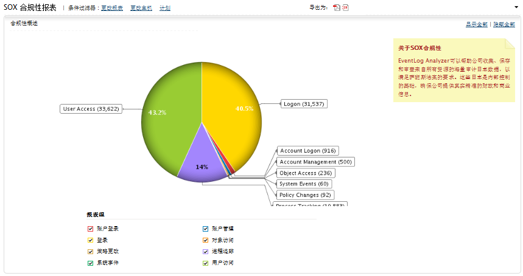

萨班斯·奥克斯利法案（SOX）合规性报表
SOX（萨班斯·奥克斯利法案） (Sarbanes Oxley)立法要求所有的上市公司和和会计事务所向审计师显示他们的财务报告的准确性。

EventLog Analyzer允许企业从所有源收集、保留和审查数以TB字节的审计跟踪日志数据，来支持SOX法案404部分的IT处理控制规定。这些日志提供了企业内部控制的基础组成形式，确保企业的财务和业务信息是真实、准确的。
SEC 302 (a)(4)(A) - 系统事件
SEC 302 (a)(4)(A) - 进程追踪
SEC 302 (a)(4)(B) - 策略更改
SEC 302 (a)(4)(C) - 登录
- 成功的用户登录
- 成功的用户退出
- 不成功的用户登录
- 终端服务会话
SEC 302 (a)(4)(D) - 帐户登录
SEC 302 (a)(5)(A) - 对象访问
- 访问的对象
- 创建的对象
- 更改的对象
- 删除的对象
- 对象句柄
SEC 302 (a)(5)(B) - 用户访问
SEC 302 (a)(6) - 帐户管理
|